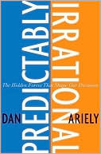
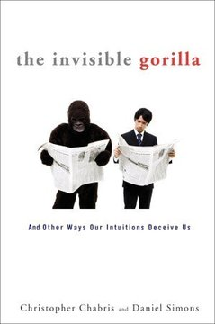
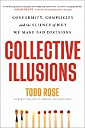

Módulo 03 / Apartado 3 de 5
Sesgos, y el sesgo de creer en los sesgos
Qué es un sesgo, por qué existe, y por qué el más famoso de todos está medio desmontado desde 2016.
Qué es un sesgo y por qué existe
Un sesgo cognitivo es una desviación sistemática al juzgar o decidir. Lo importante está en sistemática: no es que te equivoques al azar, es que te equivocas siempre en la misma dirección. Y eso significa que se puede predecir, y por tanto explotar.
Porque pensar cuesta energía, y el cerebro es carísimo de mantener. La solución evolutiva fue construir atajos: reglas rápidas que aciertan casi siempre y gastan poquísimo. Se llaman heurísticos.
Un sesgo es lo que pasa cuando el atajo se aplica donde no toca. No es un defecto de fábrica, es una ventaja funcionando fuera de su terreno. Recuenco lo resume así: todos los sesgos existen porque el cerebro está programado para ahorrar energía.
Y ahora la parte incómoda de este apartado
Si vas a hablar de sesgos en una defensa, más te vale saber esto, porque es el tipo de cosa que te desmonta una presentación entera.
El sesgo más famoso del mundo, el que sale en LinkedIn cada semana, es el efecto Dunning-Kruger. Y está seriamente discutido.
Lo que se cuenta: que los incompetentes se creen mejores de lo que son y los competentes se infravaloran, con esa curva en forma de tijera.
La crítica: Edward Nuhfer y su equipo (2016 y 2017), y después Gignac y Zajenkowski (2020), mostraron que el gráfico aparece incluso con datos generados al azar. El problema es de método: se compara la autoevaluación con la diferencia entre autoevaluación y resultado, y eso genera correlación por construcción.
Lo que sigue en pie: incluso los críticos más duros aceptan que la precisión con la que te evalúas sí se relaciona con lo bueno que eres. El efecto existe. Lo que no existe es del tamaño del meme.
Y fíjate en lo que acaba de pasar, porque es la lección del módulo entero funcionando sobre sí misma: el sesgo más citado en el mundo del pensamiento crítico se cita mal por un sesgo. El de aceptar sin comprobar algo que confirma lo que ya creíamos, que es que los tontos son unos creídos.
El sesgo binario, que es el que más estorba aquí
De todos los de la lista, este es el que Recuenco señala como más dañino para el CPS, y no suele salir en las presentaciones.
Consiste en enmarcar una cuestión como si tuviera dos lados. En cuanto está enmarcada así, la gente se ve obligada a hablar desde uno de los dos, aunque lo que haya en realidad sea un continuo con veinte posiciones. Y el que intenta ocupar el medio no parece matizado: parece tibio.
La alternativa que propone tiene nombre: complejizar. No buscar el punto medio, que sigue siendo la misma línea, sino sacar a la superficie que hay más de dos posiciones posibles.
El dato raro: el libro de Kahneman no está
Aquí hay que hilar fino, porque la primera versión de esta página decía una cosa que no es verdad y conviene decirlo antes de nada.
Aquí ponía que Kahneman no aparece citado ni una vez en las turras. Es falso. Aparece veintiuna veces, y hay una turra entera —la de la evaluación de riesgos— dedicada a él y a Tversky, con biografía incluida. En otra los llama «clásicos» y dice que Thinking, Fast and Slow es «un libro fundamental». Me equivoqué al cruzar los datos: confundí «no está entre los libros enlazados» con «no se le nombra».
Lo que sí es cierto, y sigue siendo llamativo, es la versión estrecha del dato. En el corpus hay 302 libros enlazados con su ficha —portada, enlace, recomendación explícita—. Entre esos 302, Pensar rápido, pensar despacio no está. Kahneman solo asoma como coautor de una recopilación de artículos que nadie ha leído.
O sea: se le nombra mucho y no se le enlaza nunca. Se le cita de memoria, como se cita a alguien que se da por sabido. Los libros que sí llevan ficha para lo mismo son otros:
- The Undoing Project, de Michael Lewis, que cuenta a Kahneman y Tversky como historia de una amistad.
- Predictably Irrational y The Invisible Gorilla, divulgación de los efectos.
- Y sobre todo Trivers y Tavris y Aronson, que es el apartado siguiente.
La diferencia no es de nivel, es de enfoque. Kahneman explica los sesgos por la arquitectura de la mente: dos sistemas, uno rápido y otro lento. El corpus de las turras llega a los sesgos por la motivación: no es que tu cabeza esté mal hecha, es que te conviene no ver. Que es una lectura bastante más incómoda.
Y la moraleja de la corrección es la del módulo entero: el dato «Kahneman no aparece» era más bonito, más redondo y más cómodo de contar. Por eso colaba. Lo revisé porque al preparar el módulo 4 me lo encontré citado de frente en un hilo sobre creatividad. Un curso de pensamiento crítico que no se revisa a sí mismo no vale nada.
Fuentes de este apartado
Las turras de las que sale
El hilo de referencia sobre sesgos del corpus. Va por la vía de la decisión bajo riesgo y de por qué las estimaciones fallan de manera sistemática y no aleatoria.
La importancia del recalibrado en escenarios CPSTurra · 52 tweetsDe aquí sale el sesgo binario y la propuesta de complejizar. También es la turra del apartado 5, porque va de cambiar de opinión, y el dato de que los de alto cociente son los que peor lo hacen.
El efecto amnesia de Murray Gell-MannTurra · 17 tweetsCorta y muy buena. El efecto que describió Crichton citando a Gell-Mann: lees en el periódico un artículo de tu especialidad, ves que está lleno de errores, pasas de página y te crees el siguiente. Es un sesgo que no sale en las listas y que explica media conversación de sobremesa.
Las posibilidades reales de decidir con certidumbreTurra · 40 tweetsSobre lo excepcional que es tener información suficiente para decidir. Encaja aquí porque casi todos los sesgos de esta lista son maneras de rellenar ese hueco sin darnos cuenta.
Los libros
 The Undoing ProjectMichael Lewis · 2016
The Undoing ProjectMichael Lewis · 2016Kahneman y Tversky contados como historia. Es lo que el corpus cita en lugar de citar a Kahneman directamente, y para empezar funciona mejor: te quedas con los efectos porque te quedas con las personas.

Predictably IrrationalDan Ariely · 2008El catálogo divulgativo de sesgos con experimentos famosos. Recuenco dice que fue el libro que le plantó la semilla del factor X en la cabeza. Aviso pertinente en este módulo: Ariely ha tenido controversias serias sobre datos en trabajos posteriores.

The Invisible GorillaChabris y Simons · 2010De los autores del experimento del gorila: mientras cuentas pases de baloncesto, un gorila cruza la pantalla y la mitad de la gente no lo ve. Va de los límites de la atención, que es la base física de por qué no ves lo que tienes delante.

Collective IllusionsTodd Rose · 2022Qué pasa cuando casi todo el mundo cree en privado una cosa y en público otra, porque cada uno da por hecho que los demás piensan distinto. Es el puente entre este apartado y el 5, donde sale la espiral del silencio.